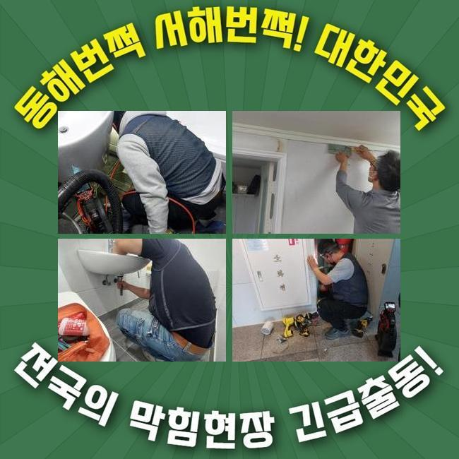
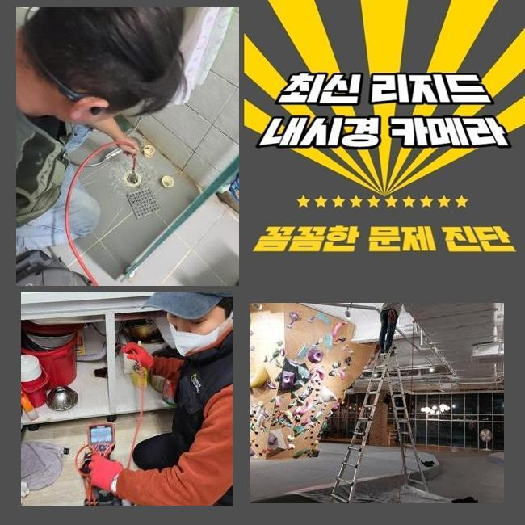
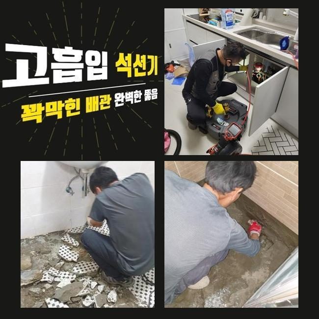
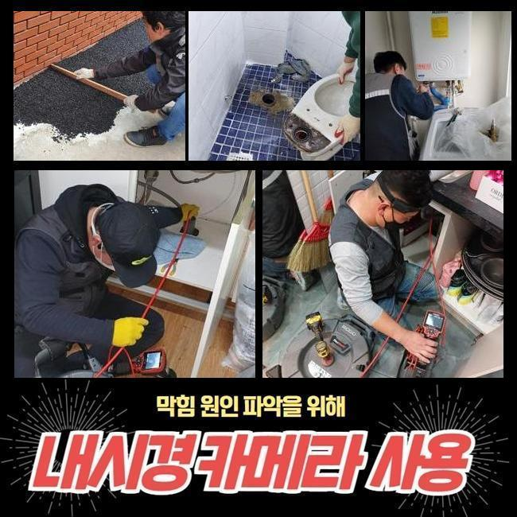
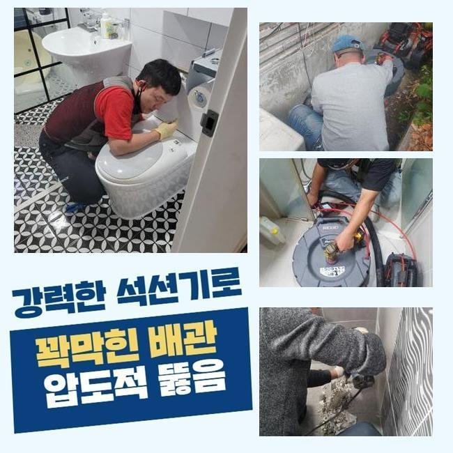
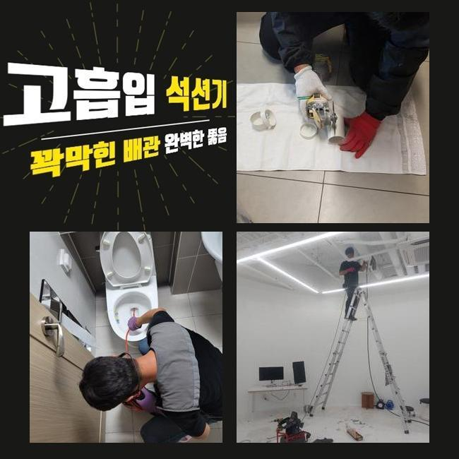
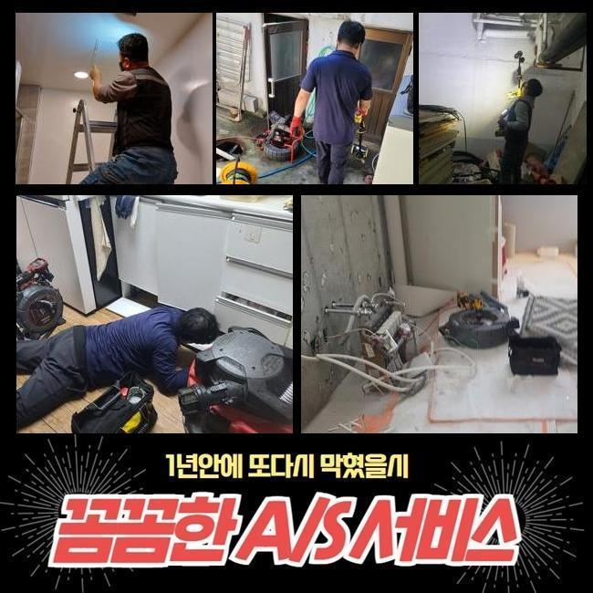

🏠 양평시 하수구역류 파주시 아파트화장실하수구막힘
파주 하수구막힘 전문 시공 후기

📋 작업 개요
- 위치: 파주
- 서비스 유형: 하수구막힘, 배관막힘, 집수정막힘, 누수수리, 역류해결, 뚫는업체, 배관청소, 고압세척
- 작업 일시: 2024. 12. 12. 9:16
- 업체명: 하수구수사대 (010-5615-2118)
🔍 문제 상황
양평시 하수구역류 파주시 아파트화장실하수구막힘
하수구시스템이 무너진다면 어떤장소든지 불편할수밖에없죠
며칠전에 방문했던 현장으로 상세히 안내드리고자하니 참고해보시면 도움되시리라 생각해요
내방드렸던곳은 많은점포로 이루어진 상가건물이었는데 배관이막혔다고 문의하셨는데 엮여있는 하수구들도 청소를 같이해달라고 요청주셔서 방문드리게되었죠
여러매장이 입점한상가에서 막혀버리게된다면 물을쓸때 제약이걸려 영업을 진행하는데있어 곤란하기때문에 신속하게 처리하셔야합니다
빈번하게 막히는문제가 발현시될때 자가적인조치로 대처하셨다고 하셨는데요
간소한 방법의경우 대처해볼수있지만 본래에 심한상태라면 간단한방법으로는 일시적으로만 처리된다는것을 아셔야합니다
그렇더라도 대부분은 가벼운 상황일거라고 인지한다는것이죠
막히는증세는 단순하게 이물제거만 진행하는것이아닌 전면적으로 하수도를 확인해보고 수리를해야합니다

🔎 원인 분석
💡 전문가 진단: 정밀 진단 장비를 사용하여 슬러지의 고착 여부를 판명하고 타격/세척 작업을 실시했습니다.
현장으로도착해 집수정쪽을 체크해보니 이곳을통하여 막힘현상이 일어난것을 알수가있었어요
넘칠정도로 막혀있었으며 그대로둔다면 역류되면서 길거리에 오수가 흘러넘칠까 염려되었죠
그렇기에서둘러 세척기계를 준비한뒤 깊게박힌 이물질들을 없애줍니다
물이많다보니 입구찾기가 힘들었으므로 석션기계를 활용하여 넘친물먼저 제거해주었어요
흡입한뒤에는 노즐을집어넣어 작업해줬어요
다량의 이물이보였기에 단번에제거하기는 어려웠죠
그렇다보니 반복해주면서 청소를진행했고 청소결과 구멍이보였으므로 배관카메라로 체크해보니 아직도남은 기름이물이 잔여된것을 볼수가있었네요
기름이물외에도 여러성질의 이물질들이 가득한게보였어요
다세대건물은 여러원인으로 막히므로 관리하는것을 잘하셔야해요
한번더 강조드리는것으로 관리하지않고 방치를하신다면 2차적인피해가 발생될수있어요

🔧 작업 과정
저희들의경우 집수정이나 배관등 하수구와관련해 트러블이생길경우 도움이되드리고 연관되어 궁금하다면 연락주셔서 상담을해보세요!
영업시설에서 역류나 막힘때문에 누수문제로 이어지는이유는 금일현장처럼 안쪽에 오염물질이 가득하기때문이죠
하수관내부에 이물이 퇴적되면될수록 고착형태로 뭉치게되어 점진적으로 형태가커지고 배관안을 막아버려서 막힘문제들이 발생하는것이에요
막힘의경우 여러의 증상으로인해 발발되지만 일반적인 현상으로는 내부에오염물이 축적되며 막히는문제가 발생하는거에요
상가에서는 이런일이 종종더 발현하는데 그이유는 많은방문객이 건물을이용하기 때문이에요
오늘장소도 이런이유로 오염물이 퇴적되서 막혀버린거에요
하수는한곳으로 모여흘러나가는데 메인관에 쓰레기같은 각종오염물이 쌓일경우 당연하게도 막히게되죠
그렇기에 일상에서 관리에집중하여 막히지않도록 예방해야한답니다
이미막힘이 진행된경우 업체를통하여 문제와관련하여 알아본후에 증상을 처리해야한답니다
하수구속은 두눈으로 살피기어려워서 장비를갖춘곳으로 의뢰하여 안속에 뭐가있는지 살핀후에 작업해야겠죠
연관된지식이 무지한상태에서 과도하게 하수관을 작업할경우 도리어 악화되는경우도 있습니다
한동안 고객님께서 입구주위만 잔해물질을 제거했기때문에 결국엔 이런일이 생기게되었으며 장시간 축적되었기때문에 작업에착수할때 시간적인 부분에있어 소요가됩니다
잔여물들까지 빨아들였고 급기야 모든이물을 소거시켰죠
금번현장은 오염도부분에서 심각했기에 다른곳보다 시간부분에서 조금더걸렸지만 제거해낼수있었죠
이물질을 모두 확인한 후에 한쪽으로모아서 마무리했답니다


✅ 작업 완료
내시경을 투입하여 배수관내부를 조사해보니 상당한양의 이물이차있던 하수관이 제거로인해 깨끗해졌는데요
급작스레 발발된 문제로인하여 곤란하다면 염려하지마시고 전문가를호출해 조치를취하는게 확고한 방안입니다
전반적으로 세세히 조사하고 합리적방안으로 고쳐드리니 도움을원하시면 우려마시고 편안한 마음으로 요청주세요!
전지역어디든 60분안팎으로 방문할수있으니 의뢰해주시면 뚫는결과로 내비치도록할게요




⚠️ 베란다 누수 및 방수 관리 방법
- ✅ 비가 많이 올 때 창틀 주변이나 아래층 천장에 얼룩이 생기는지 정기적으로 확인해 보세요.
- ✅ 우수관 주변 실리콘 마감이 들뜨거나 깨진 틈새가 있는지 손상 여부를 수시로 체크하세요.
- ✅ 베란다 바닥 타일의 줄눈(메지)이 소실되면 그 틈으로 물이 침투하여 누수가 유발됩니다.
- ✅ 누수 의심 증상 발견 시 방치하면 아래층 손실이 커지므로 즉시 전문가의 진단을 받으십시오.
💡 핵심 정리
- 확실한 장비 작업(내시경 점검 및 샤프트 스케일링)으로 원인을 뿌리 뽑습니다.
- 작업 후 1년 이내에 동일한 부위 재발 시 100% 무상 A/S 서비스를 보장합니다.
- 서울 · 경기 · 인천 전 지역에 24시간 언제든 긴급 출동할 수 있도록 항시 대기 중입니다.
❓ 자주 묻는 질문 (FAQ)
🚨 파주 하수구막힘 문제로 고민이신가요?
정확한 원인 진단과 확실한 시공으로 재발 없는 해결을 약속드립니다.
24시간 긴급 출동 | 서울 · 경기 · 인천 전지역 | 1년 내 재발 시 무상 A/S